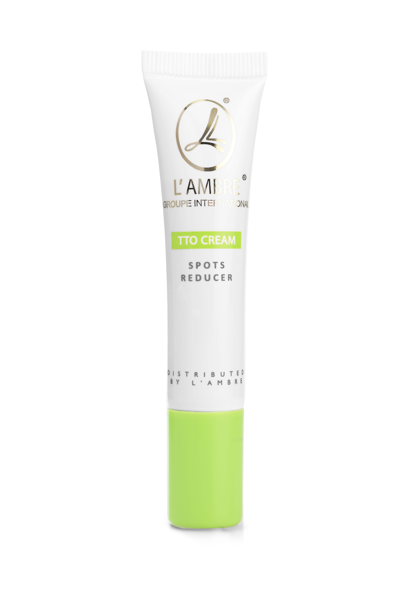
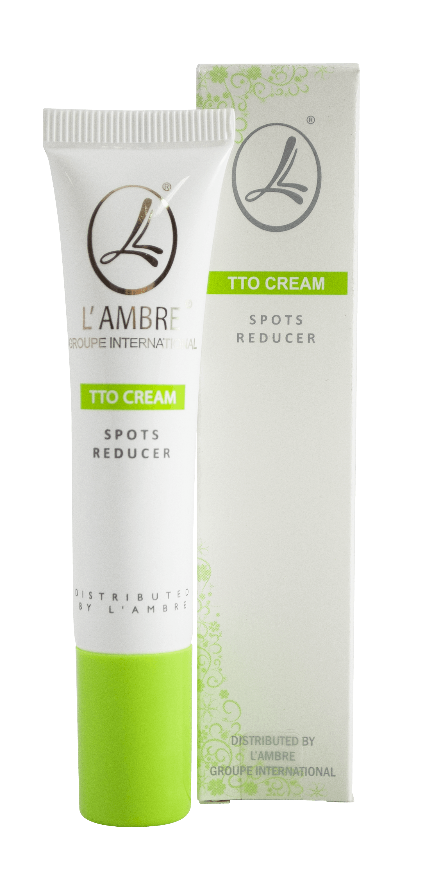
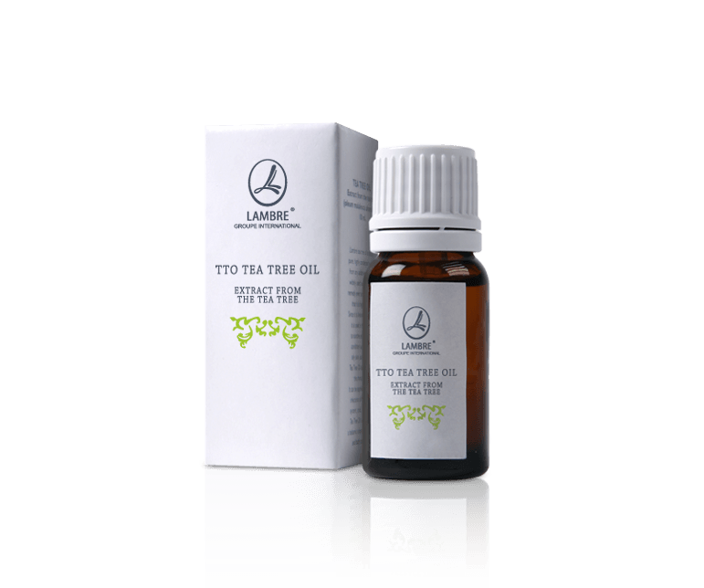
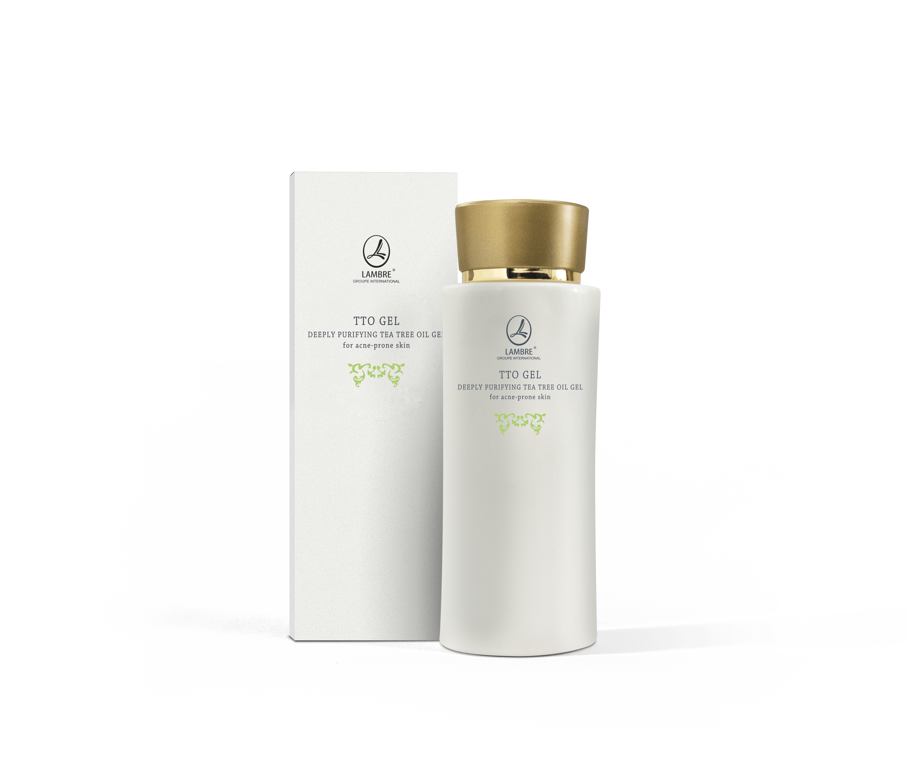
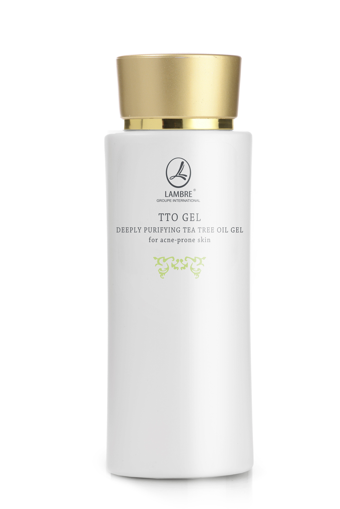

Уход за кожей
Tto line
Tto tonic
Тоник для проблемной кожи 120 мл
Уменьшает угревые изменения, сдерживая выработку кожного жира. Масло чайного дерева в сочетании с регулирующим концентратом Ac.net и эхинацеей пурпурной очищает и стягивает поры, предотвращает развитие бактерий, эффективно противодействует повторному появлению угревой сыпи. Тоник восстанавливает натуральный кислотно-щелочной баланс (pH) кожи, освежает и дезинфицирует ее. Тоник TTO не содержит спирта, благодаря чему не вызывает раздражения и не пересушивает кожу.
- Наличие компонента ac.net уменьшает угревые изменения, благодаря сокращению выделения кожного сала и излишнего ороговения кожи
- Обладает противовоспалительным, антибактериальным, противовирусным, заживляющим, увлажняющим действием
- Нежно стягивает поры и уменьшает предрасположенность к скапливанию в них себорейных выделений, понижает уровень выделения себореи
- Уменьшает предрасположенность к появлению угревых изменений
- Играет важную роль в удалении угрей
- Соответствующим образом увлажняет кожу
- Является натуральным средством для предотвращения бактериальных заболеваний кожи
- Смягчает и разглаживает поверхность кожи
- AC. NET
- Phytexcell Echinacea - экстракт из эхинацеи пурпурной Echinacea purpura
- Water Soluble TTO - масло чайного дерева
Tto cream
Крем-гель против угревой сыпи 15 мл

Гель TTO Cream для местного применения объявляет войну угревой сыпи. Антибактериальные молекулы Tea Tree Oil, эхинацея пурпурная (Echinacea purpurea), а также редукторы излишнего выделения кожного сала и ферментов (энзимов), содержащиеся в геле, эффективно борются с угревыми изменениями, а также приостанавливают их появление. Гель регулирует правильное функционирование клеток кожи. Уменьшает покраснения и кожную сыпь, значительно улучшая внешний вид кожи.

- Успокаивает раздражение и покраснения кожи в месте появления кожной сыпи, нежно ее осветляя.
- Улучшает внешний вид кожи благодаря уменьшению угревых изменений (противобактериальное действие), а также уменьшению видимости различных недостатков кожи
- Нежно стягивает поры, приводит к редукции угрей и уменьшению выделения себореи.
- Bisabolol - бисаболол
- Phytexcell Echinacea - экстракт из эхинацеи пурпурной Echinacea purpura
- Water Soluble TTO - масло чайного дерева
Tto oil
Масло чайного дерева 9 мл

Масло австралийского чайного дерева с мощным антибактериальным и противовоспалительным действием. Масло TTO Oil обогащено водно-гликоловым экстрактом из эхинацеи и регулирующим концентратом Ac.net. Для широкого применения. Великолепная поддержка организму в борьбе с инфекциями, воспалительными процессами и угревой сыпью. Бодрящий, пряный и терпкий аромат обладает ослабляющими напряжение свойствами, помогает бороться со стрессом, стимулирует память и мыслительные процессы.
- Оказывает успокаивающее, расслабляющее воздействие
- Производит бактерицидное воздействие
- Борется с бактериальными и грибковыми патогенными флорами
- Эффективно борется с инфекциями
- Действует расслабляюще, удаляя нервное напряжение
- Снижает избыточное ороговение кожи
- Чистое австралийское масло чайного дерева Tea Tree Oil
Tto gel
Очищающий гель для жирной и комбинированной кожи 120 мл


Идеальный продукт для ежедневного ухода за проблемной кожей. Нежно очищает кожу, удаляя излишнее количество кожного сала, очищает поры от загрязнения. Эффективная рецептура, обогащенная натуральными бетаинами, эхинацеей пурпурной и Ac.net, оказывает антибактериальное и противовоспалительное действие, регулирует работу сальных желез, возвращая коже, подверженной угревой сыпи, натуральный, здоровый внешний вид.
- Тщательно моет и очищает кожу, удаляя с ее поверхности и из пор натуральные загрязнения, накопление себума
- Регулирует работу сальных желез, уменьшает себорею, а также видимость угревых изменений. Предотвращает их появление в будущем
- Возвращает утраченный физический баланс кожи, предотвращает развитие воспалительного процесса, ускоряет заживление и уменьшает вероятность их повторного появления
- Обладает противобактериальными свойствами, задерживает развитие и размножение бактерий
- Возвращает коже естественный цвет, кожа осветляется и выглядит свежее
- Кожа светлеет и приобретает матовый оттенок, становится намного более гладкой
- AC. NET
- Phytexcell Echinacea - экстракт из эхинацеи пурпурной Echinacea purpura
- Water Soluble TTO - масло чайного дерева